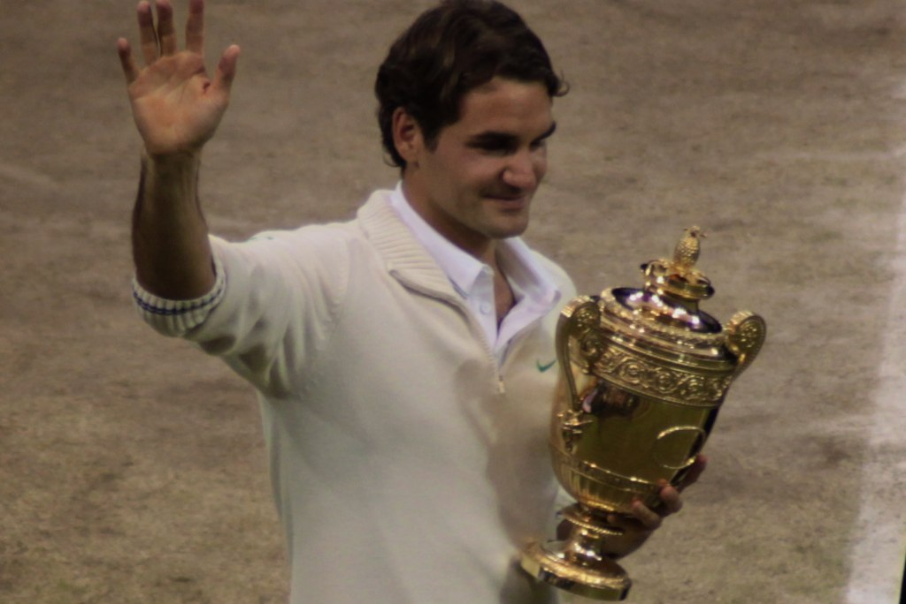

This page contains iconic photos of Roger Federer from his career.
Image: "Federer Wimbledon2012 with trophy" by anonlinegreenworld at https://commons.wikimedia.org/wiki/File:Federer_Wimbledon2012_with_trophy.jpg, CC BY-SA 2.0
Image: "Roger Federer and Juan Martin Del Potro" by Tigre Municipio at https://commons.wikimedia.org/wiki/File:Roger_Federer_and_Juan_Martin_del_Potro_(8366840585).jpg, CC BY 2.0